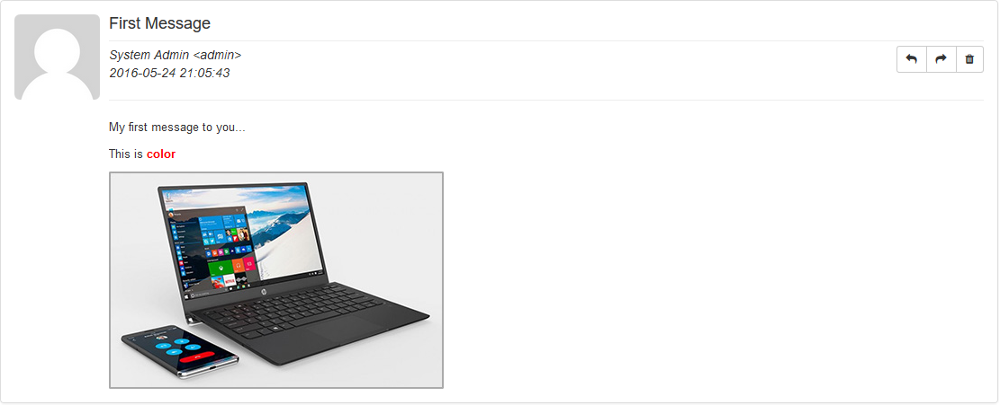

Release: 07 / 06 / 2016
Md. Shamim Shahnewaz
mdshamimshahnewaz@gmail.com
Thank you for purchasing my plugin. If you have any questions that are beyond the scope of this help file, please feel free to email. Thank you so much!
Simple Personal Message is a private and secure messaging system for Wordpress website. Ajax based Full functioning and Group based messaging system to ensure the private communication with all users to users of any Wordpress system site. Developer customization is very easy and built with most popular Boilerplate plugin architecture.
System Key Features -
Simple Personal Message is easy to install. Follow the instruction to install plugin.
Via Plugin Installer
Login to your wordpress admin panel http://your_domain_name.com/wp-admin
Follow this guideline to install your plugin via Plugin Installer
Manual Installation
Download the plugin and unzip. Go to your_site_root_directory/wp-content/plugins and then upload via
FTP program.
Follow this details guideline to install your plugin via Manual Installation
Go to plugin screen and click Activate button.
After activation a Settings link will be appear and click to go to settings page.
Or you can go to and click Settings > SPM Settings
In settings page you can set the limit of sending message accourding to user Roles / Capabilities. Blank or
Zero(0) means unlimited.
Go to and click SPM Message > Personalize Inbox
In personalize page you can config your inbox and general settings. All filed are describe below.
Field Description
Go to and click User > SPM User Groups
In SPM User Group page you can create user group and manage them. Using WP Taxonomy so you can edit
easily as you need.
Go to and click Users > All users
In All Users page you can assign a group into seleted users and manage them also. Select users and click Change
Group to then select your desire group and click Change button.
Go to and click SPM Message > SPM Compose
Or go to and click New > Message
In SPM Compose page you can send message. Type an user name on Enter Receiver Name field, an
autocomplete user list will appear based on your keyword. You can send message to multiple user. Also you can
select group to send message to your recipients and/or group recipients
Go to and click SPM Message > SPM Inbox
Or click Admin Notice
In SPM Inbox page you can view all your inbox message. You can read, delete, view, reply and forward message
from here.
Go to and click SPM Message > SPM Outbox
In SPM Outbox page you can view all your outbox message. You can read, delete, view and forward message from
here.
Go to and click SPM Message > SPM Trash
In SPM Trash page you can view all your deleted message. You can restore and permanently delete your trash
message fro here.
Go to and click SPM Message > SPM Trash
In SPM Outbox page you can view all your outbox message.

Go to Dashboard Your message stats will be appear based on your configuration.
I've used the following components as listed.
Once again, thank you so much for using this plugin. As I said at the beginning, I'd be glad to help you if you have any questions relating to this plugin. I'll do my best to assist. If you have a more general question relating to the plugin on Plugin Directory, you might consider visiting the plugin's forums and asking your question in the "Support" section.
Md. Shamim Shahnewaz